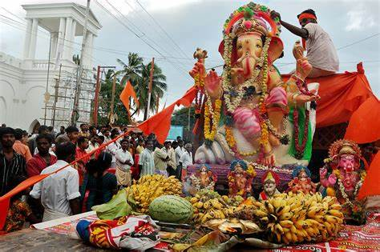

Ganesh Chaturthi, also known as Vinayaka Chaturthi, is a revered 10-day Hindu festival that marks the birth of Lord Ganesha, the god of wisdom and prosperity. It begins on the fourth day of the month of Bhadrapada, which usually falls in August or September. The festival is celebrated with great devotion in India, especially in Maharashtra, where it is one of the most awaited events of the year.
The celebration involves installing clay idols of Ganesha in homes and public pandals, which are beautifully decorated and depict scenes from Hindu mythology. Devotees offer prayers, sing devotional songs, and perform aarti to seek blessings from the deity. The festival is also known for its elaborate feasts, which include modak, a sweet dumpling believed to be Ganesha's favorite food.
The culmination of Ganesh Chaturthi is the grand procession known as Ganesh Visarjan, where the idols are immersed in water, symbolizing Ganesha's return to Mount Kailash to join his parents, Shiva and Parvati. This ritual signifies the cycle of birth, life, and dissolution.
Ganesh Chaturthi is not only a religious festival but also a social and cultural event that brings people together, fostering a sense of community and happiness. It is a time when art, craftsmanship, and religious devotion find a harmonious expression.